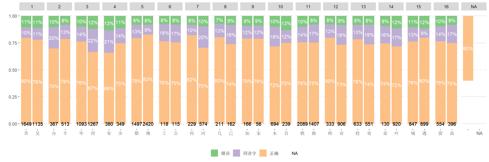

Code
targets::tar_load(data_valid_FWSPro)
chrs_freq <- read_tsv("config/CharFreq.txt", skip = 5, show_col_types = F)
chrs_used <- readxl::read_excel("config/过目不忘-汉字库（新）.xlsx") |>
left_join(chrs_freq, by = "汉字")
data_adj_acc <- data_valid_FWSPro |>
unnest(raw_parsed) |>
group_by(user_id, game_time) |>
mutate(trial = row_number()) |>
ungroup() |>
mutate(
across(
c(stim, resp),
str_split,
pattern = "-"
)
) |>
unnest(c(stim, resp)) |>
left_join(
select(chrs_used, stim = 汉字, stim_id = ID, stim_freq = 序列号),
by = "stim"
) |>
left_join(
select(chrs_used, resp = 汉字, resp_id = ID),
by = "resp"
) |>
separate(stim_id, c("stim_phon", "stim_form"), convert = TRUE) |>
separate(resp_id, c("resp_phon", "resp_form"), convert = TRUE) |>
mutate(
acc = case_when(
stim == resp ~ "正确",
stim_phon == resp_phon ~ "同音字",
stim_phon != resp_phon ~ "错误"
)
)
data_adj_acc |>
group_by(stim, stim_phon, stim_freq, acc) |>
summarise(n = n(), .groups = "drop_last") |>
mutate(prop = n / sum(n)) |>
ungroup() |>
ggplot(aes(stim, prop, fill = acc)) +
geom_bar(stat = "identity") +
geom_text(
aes(label = scales::label_percent(accuracy = 1)(prop)),
position = position_stack(vjust = 0.5),
color = "white"
) +
geom_text(
aes(label = stim_freq),
y = 0
) +
scale_fill_brewer(palette = "Accent") +
facet_wrap(~ stim_phon, scales = "free_x", nrow = 1) +
labs(x = "", y = "", fill = "") +
# scale_y_continuous(expand = c(0, 0)) +
ggthemes::theme_hc()